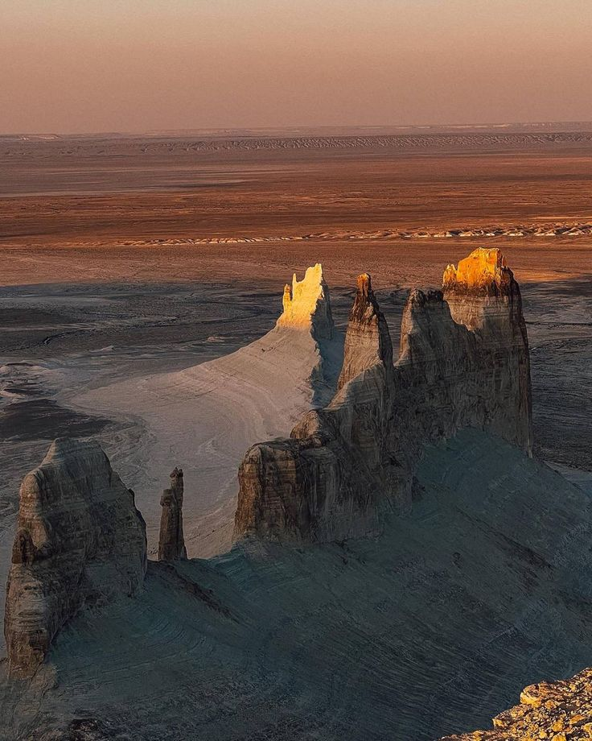
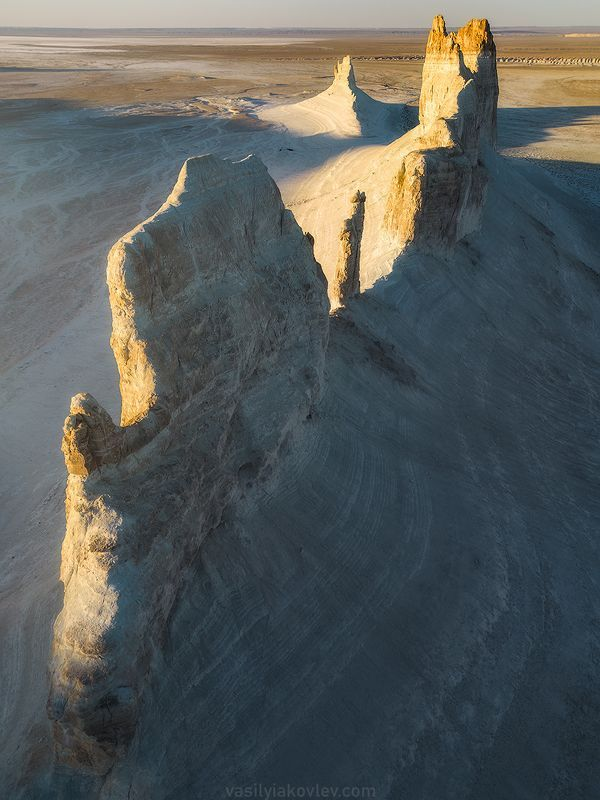
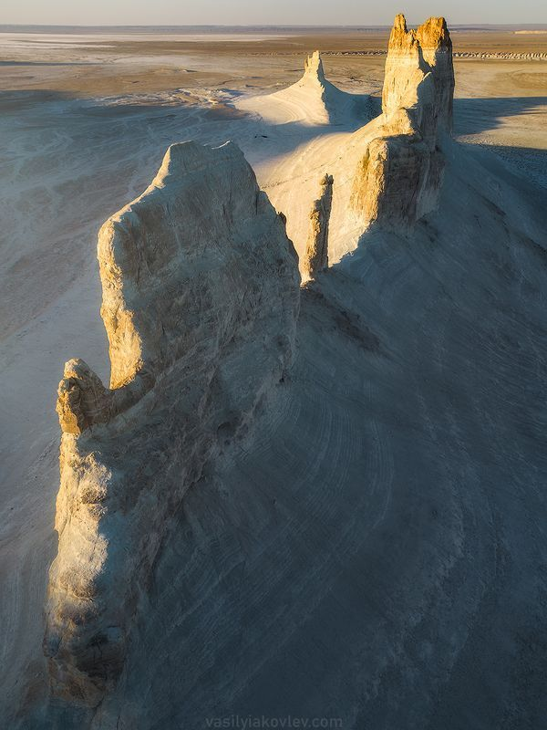

Урочище Босжира — фантастический ландшафт Мангистау
Босжира — это уникальное природное образование на плато Устюрт, которое поражает своими инопланетными пейзажами. Белые скалы, остроконечные пики и бескрайние просторы делают это место одним из самых фотогеничных в Казахстане.
- Тип местности: карстовая долина с меловыми горами
- Высота утёсов: до 200 метров
- Особенности: форма "Клыков", виды на закате
- Расположение: 300 км от Актау
Что можно сделать?
- 🏕 Кемпинг под открытым небом
- 📷 Фотоэкспедиции и дроны
- 🚙 Джип-туры по плато
- 🌌 Наблюдение за звёздами
Как добраться?
📍 Плато Устюрт, Мангистауская область
🚗 Только на внедорожнике (желательно с гидом)
📅 Лучшее время — весна и осень
Босжира — это ландшафт, который оставит вас без слов. Подходит для экстремалов, фотографов и всех, кто ищет необычные природные чудеса.
ФОТО

 
